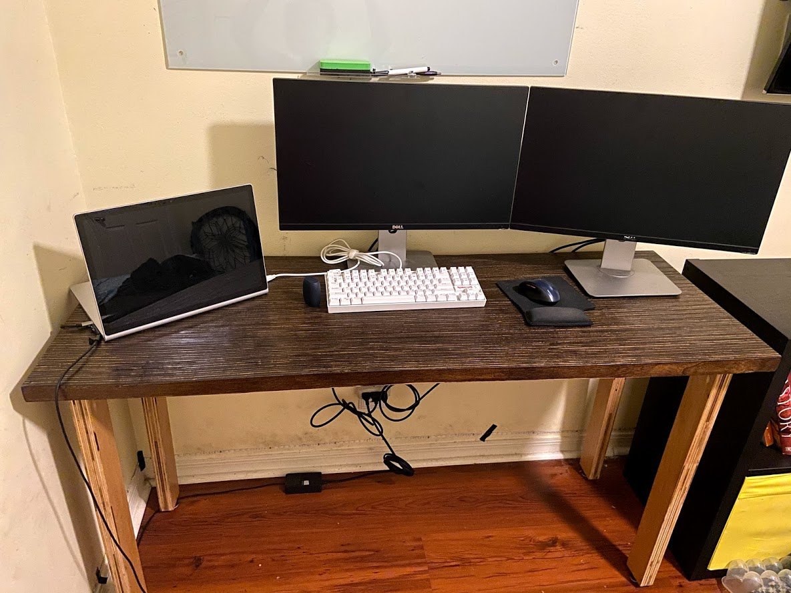
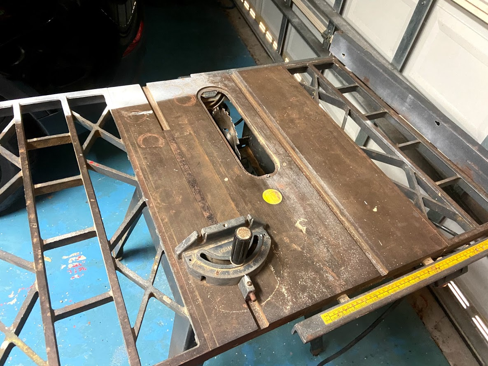
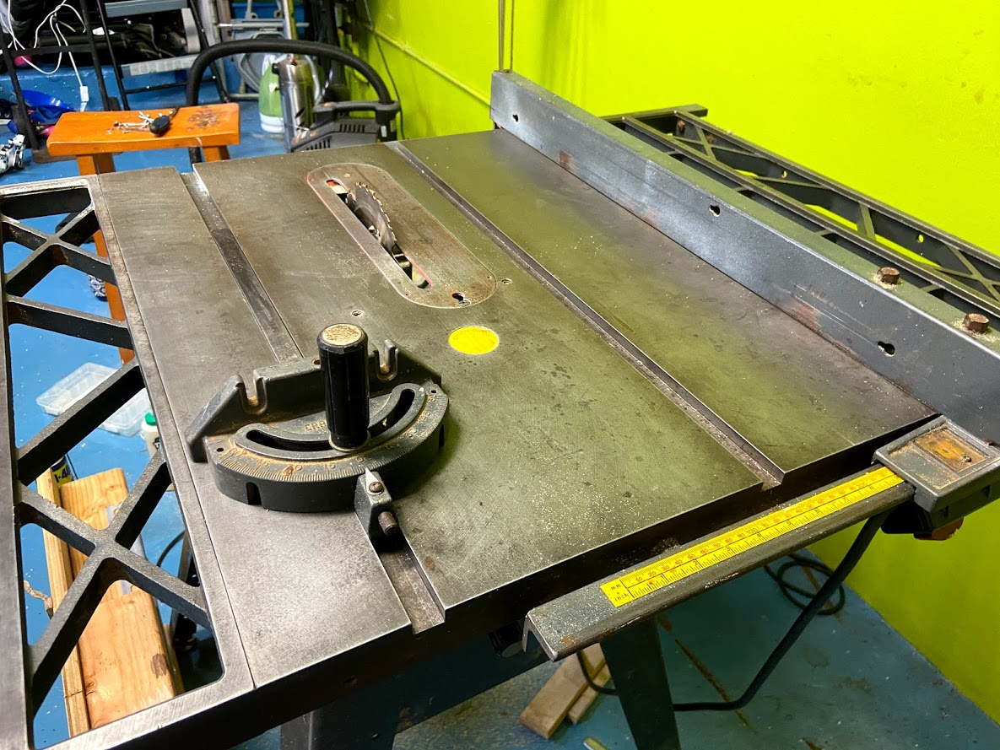
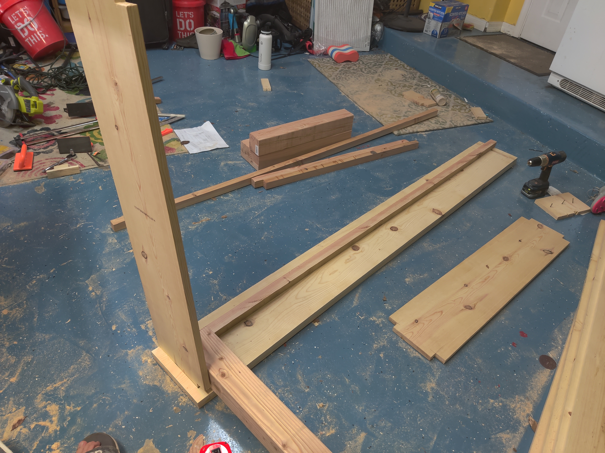
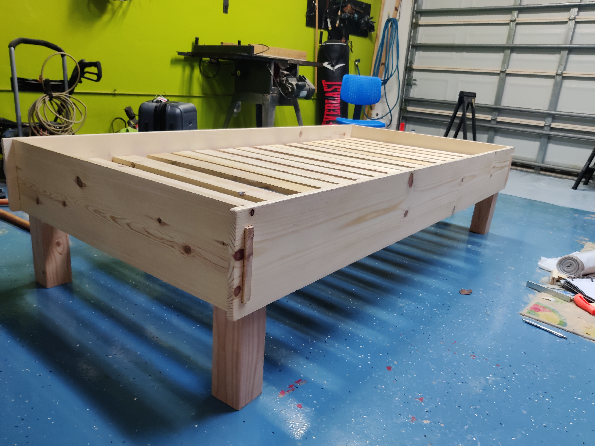
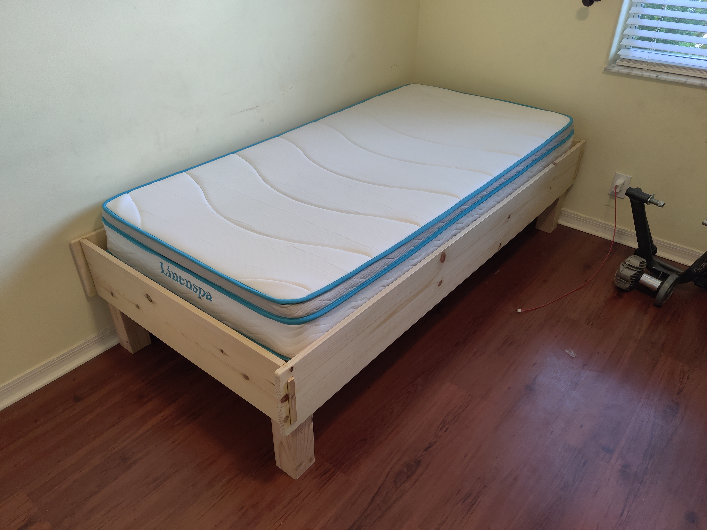

Woodwoorking
Raised Planter Box
My first ever woodworking project.
Strapped together a bunch of cedar planks using pocket holes and built a basic frame using 2x4s.
It's been a few years since it was built and it's still doing pretty good.
Probably have ~5 herbs growing in it.

Plyood Strip Desk
I cut up a sheet of plywood into 3/4" length pieces.
After cutting up ~25 pieces, I glued them up together to form the table top.
Planned them a little bit, promptly gave up with the hand plane, and went to a random orbital sander.
I was a bit lazy with the legs and just pocket holed them straight into the table top.
They're made up of the same plywood just doubled up.
Also, I made the website on this desk. :)

Table Saw Restoration
I got this craftsman 113 for a pretty good price from someone on craigslist.
Only paid $90 and it came with a dado set.
It wasn't used for a while so it needed some work to get it back up to spec.
I scoured the top using an artificial scouring pad.
After losing any ability to move my arms, I stopped and moved onto waxing.
I liberally applied a coat of paste wax and voilla!
Works like a dream now.


Bed Frame
After getting stuck back at home after the start of the pandemic, I figured
my room could use a little sprucing up. Thus was born an idea.(does speak english correct me?)
I started off wanting to build a bed with dovetails and other fancy joinery but
quickly learned that I am no pro. After that bombshell, I went back to the drawing board
and combined a couple of design plans plus some of my ideas to come up with my very own
design.
The biggest hurdle for me was getting the mortise and tenon joints to work.
Since I didn't have any chisels, in order to create mortises, I sawed off about 2 inch
from the ~7ft boards, used a regular table saw blade as a dado, and chiseled away about
half an inch on either side of my original cut. After all that, I glued the two pieces
together and had myself wonderful mortises. Then I did it three more times. Ouch.
Everything else was fairly routine and at the end everything came together surprisingly
easily. The bed is pretty neato and, as a bonus, it doesn't break when I sleep on it \s.


